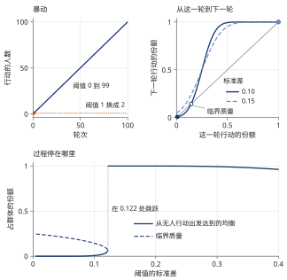

第 11 章 复杂传染与临界质量
2021 年 1 月，散户投资者在 Reddit 论坛 WallStreetBets 上协调起来，针对对冲基金卖空（short selling）GameStop 股票的做法。卖空者（short seller）先借入股票卖出，之后再买回，所以价格上涨时他亏损；逼空（short squeeze）是一次迫使卖空者买回、从而把价格推得更高的上涨。按 Lucchini 等（2022）给出的背景，论坛用户在 2021 年 1 月 22 日发动了这次逼空；到 1 月 26 日，价格已经上涨超过 600%，1 月 28 日触及历史最高的日内价，2 月 1 日和 2 日大幅下跌（据 Lucchini 等的转述）。
Lucchini 等研究了这个论坛，时间从 2020 年 11 月 27 日到 2021 年 2 月 3 日。他们把用户出示证明、表明自己有资金押在这只股票上的情形记为一次承诺，并识别出 30,133 名用户做出的 36,128 次承诺。开始一场关于投资的新讨论时出示自己头寸的证明，是这个论坛广泛共有的规范之一（据 Lucchini 等的转述）。在 GameStop 发布新董事会的公告（announcement）之前，用户每天发几十条承诺帖（commitment post）；第一次价格飙升的 1 月 14 日当天，这个数目涨到十倍，并继续增长，到下一次飙升的 1 月 25 日之前的十一天里，它在增长，收益率没有。1
第 5 章的根模型（root model）假设简单传染（simple contagion）：听到一次消息就足以相信它并采取行动。5.8 节的表 5.1 把这条默认假设与其他默认假设并列在一起，本章去掉它，问当听一次不再够时有什么变化。11.6 节和 11.7 节回到这个案例。
11.1 简单传染与复杂传染
假设一位交易者在一周里三次听同一位朋友推荐一只股票，另一位交易者则从三个互不认识的人那里各听到一次。前一位有一个来源，听了三次；后一位有三个来源。
Centola 与 Macy（2007）把需要来自多个来源的社会确认的传染称为复杂传染（complex contagion），也就是一个人要在接触到两个或更多个激活来源之后才会染上。行为有成本、有风险或有争议时，参与的意愿可能需要来自几个来源的独立确认或强化。简单传染与复杂传染的区别，指的是激活所需要的暴露来源的数目。他们的例子是疾病：视传染性的高低，感染可能需要多次接触携带者，而不需要接触多个携带者。如果每次接触以概率 传播疾病，那么接触 次之后染病的概率是 ，所以只要 大于零，一次接触就可能足够，与同一位携带者的每次接触都算多一次暴露。在这个意义上，简单传染是一个来源就能传下去的传染。
那位重复推荐的朋友，就是一再回来的携带者。只要每次劝说成功的概率相同，不管在它之前发生过什么，重复只改变口碑（word of mouth）的速率，即第 5 章根模型里的 ，传染仍是简单传染；在这个没有人停止传播的模型里，更高的速率只改变这条推荐传开的快慢（本书的判断）。
信息也可以是复杂传染。Centola 与 Macy 指出，听说一份工作的消息通常听一次就够了，而闲话可能要等独立的来源证实之后才有人相信。Granovetter（1978）对传言（rumor）也这样读他的阈值：有些人在相信到愿意传播之前，可能需要从不止一个人那里听到一条传言。这就是信念阈值（belief threshold），5.3 节把它列为知情的人仍可能不行动的第一个原因：一个人在相信之前，要等听到几个来源。2
在均匀混合（homogeneous mixing）之下，任何人都可以与任何人随机相遇，相遇的两个人没有用过共同的来源，在一个大群体里两次碰到同一个人的概率趋于零，所以 次接触来自 个不同的人；只有在网络里持久的连接上，同一个来源才会一次又一次回来（本书的判断；11.4 节）。
11.2 没有网络时的临界质量
在 Granovetter 的暴动里，人群中一个人的阈值是 0，一个是 1，一个是 2，依此类推，直到最后一个，阈值是 99。这里一个人的阈值，是他在加入之前必须看到多少个别人加入。阈值为 0 的人先动；这激活了阈值为 1 的人，两人一起激活阈值为 2 的人，依此类推，直到 100 个人全部加入。现在去掉阈值为 1 的人，换成一个阈值为 2 的人。发起者动手，现在没有人的阈值是 1，暴动在只有一个暴动者时结束。
Granovetter 把阈值定义为在某个人做出决定之前必须已经做出这个决定的他人的数目或比例，也就是这个人的净收益开始超过净成本的那一点。用 表示阈值不高于 的人占群体的份额，用 表示到第 轮已经加入的份额。当前份额已经达到其阈值的人，都在下一轮加入，所以 模型里没有让参与者退出的设定时， 不会振荡，过程总会到达一个均衡（equilibrium），位置在 第一次从上方穿过 45° 线的那一点，在这条线上，下一轮的份额等于现在的份额。Granovetter 指出，这个模型隐含着完全连通的假设，而这个假设往往不合适：每个人都对所有其他人的行为做出反应，也就是对一个数，即整个群体中行动者的份额做出反应，模型里没有网络（本书的判断）。
Granovetter 接着给他的 100 个人以均值为 25 的正态分布的阈值，并让它们的标准差，即阈值散得有多开的度量，逐渐增大。到一个临界标准差之前，均衡的暴动者人数缓慢上升，到约 6 人；越过这一点，约为 12.2，人数跳到接近 100，然后下降。在临界标准差以下， 三次穿过 45° 线：先在低处从上方穿过，再从下方穿过一次，后来又从上方穿过。在临界标准差处，前两个交点合并成 与这条线相切的一点。
中间那个交点，即 从下方穿过的地方，是不稳定的：如果行动者的份额起点高于它，不管什么原因，过程就爬到高处的交点；如果起点低于它，就退回低处的交点，条件是阈值不再得到满足的人停止行动，映射 就隐含这一点（本书的推导）。我们把中间那个交点读作临界质量（critical mass），即越过之后采纳会自己滚大的份额（本书的判断）。Granovetter 没有用这个词，他只沿着从没有人行动出发的路径走，到第一个交点停下。我们重新计算了他的例子，临界标准差是 12.22 人，合并后的交点在 6.2 人（本书的计算）。
5.6 节描述过纯由社会影响（social influence）驱动的采纳，它在接近阈值分布的第一个不动点（fixed point）时逐渐消退（工作论文版），Granovetter 的第一个交点就是这个点（本书的判断）。在没有网络的群体里，从没有人行动出发的过程停在仅由阈值分布决定的位置（本书的推导）。3
临界质量来自一个阈值与当时行动者份额的比较（本书的推导）。在根模型的接触形式里，人们随机相遇，没有人遗忘或停止传播，要求两个不同的来源只会拖慢开头：如果开始时有两个人行动，最终所有人都会行动，没有临界点（本书的推导）。4
图 11.1 把两个例子都画了出来；标准差为群体的 0.10，即 10 人时，它的不稳定交点在群体的 0.14，即 14 人处（本书的计算）。5

11.3 阈值背后的四种机制
Centola 与 Macy 写道，至少有四种社会机制可能解释复杂传染为什么需要接触多个来源：策略互补（strategic complementarity）、可信度、正当性和情绪传染。本书把正当性和情绪传染合在规范与情绪（sentiment）之下，另加可见的行动与共同知识（common knowledge）作为第四种（本书的判断）。模型可以给这四种机制同一个阈值，它们的区别在于公开信号（public signal）对它们各起什么作用（本书的判断）。
11.3.1 策略互补
对公共物品的投资，其成本与收益往往取决于先前贡献者的数目，即让进一步的努力变得值得的临界质量。经济学家把这叫策略互补：做某件事的别人越多，每个人做它就越划算。Granovetter 的模型要求每种选择的成本与收益部分地取决于有多少别人做出哪种选择，在暴动里，依赖关系是这样走的：加入的成本随暴动扩大而下降，因为参与的人越多，被逮捕的机会越小。
Cong、Li 与 Wang（2021）给出一个市场案例的模型：一个平台，用户用它自己的代币（token）交易，采纳决定是互补的，既通过平台上的交易，也通过持有代币的成本，这个成本取决于代币价格怎样变动（工作论文版）。没有用户时，每个人持有代币得不到盈余，选择不加入（工作论文版），所以零用户的状态自己维持在零（本书的判断）。给定平台的生产率和代币价格的预期上涨，对用户之间差异的一个假设，即单调的危险率，保证有唯一的正用户数；作者放宽这个假设之后，几个用户规模都可以满足均衡条件（工作论文版）。他们的模型有完全信息（工作论文版），所以没有人在等消息，阈值是对别人所做之事的最优反应（本书的判断）。这是一个采纳阈值（adoption threshold），即别人行动的人数超过它之后，行动就划算；它关乎收益，而下一节的阈值关乎信念（本书的判断）。
11.3.2 独立来源的确认
Centola 与 Macy 的第二种机制是可信度。新做法在邻居采纳之前往往缺乏可信度，从不同的人那里听到同一个故事，会让出人意料的信息显得不太像只是告知者编出来的。
来源的数目只有在它们对事实的错误相互独立时才完全有用；共有错误的来源价值更低，同一份报道的副本只算一个（本书的判断）。五份说法都转述同一份原始报道，除了那份报道之外，对事实没有增添任何东西，把它们算作五条独立的证据，就是说服偏差（persuasion bias），第 13 章讨论它（本书的判断）。四位分析师各有自己的数据和方法，更接近四个来源，只要他们的数据和方法没有共同的错误（本书的判断）。5.3 节的信念阈值作用于一个人相信什么，不改变她有没有听到（本书的判断）。
11.3.3 规范与情绪
第三种机制是正当性：有几位亲近的朋友参加一次集体行动，往往会让旁观者更能接受这场运动的正当性。Centola 与 Macy 的第四种机制是情绪传染：集体行为模型常常假设有表达性的、象征性的冲动，可以在空间和社会关系上靠得近的聚集中传递和放大。本书把正当性和情绪，即与基本面信息无关的乐观或悲观，算作偏离按贝叶斯法则（Bayes’ rule）更新信念的情形（本书的判断）。在 GameStop 论坛上，Lucchini 等用帖子里第一人称代词中复数“我们”所占的份额来衡量群体认同，他们发现，共同认同的表达与承诺的上升一起出现，可能帮助维持了承诺，而认同不大可能是这次集体行动的起源。
11.3.4 可见的行动与共同知识
阈值作用于人们看得到的参与。Granovetter 指出，判断可能不准确，因为已经决定做某事的人没有把自己的行动公开；那么参与可能已经越过了许多阈值，而持有这些阈值的人不知道，所以他们不行动。一张头寸的截图，把没有人看得到的参与，变成论坛上人人看得到的参与（本书的判断）。
在策略互补之下，每个人还想知道有多少别人会行动，以及他们是否也知道这一点，这个链条通向共同知识，即人人知道某事，人人知道人人都知道，如此无穷无尽（本书的判断）。为了在几个均衡中做出选择，Cong、Li 与 Wang 写道，可以采用全局博弈（global game）的方法（工作论文版），它需要的前提里，包括每个参与者只有带噪声的私人信号（private signal），以及共同知识缺失（本书的判断）；第 21 章讨论这两点。公开信号在不同的机制下起不同的作用：它可以打破信息瀑布（information cascade），即后来的人照抄先前的人而忽略自己信息的现象，而在策略互补之下，它改变每个人对别人行动的预期（本书的判断；第 12、14 和 21 章）。对信念阈值来说，公开信号对看到它的每个人都是一个来源，不管重复多少次（本书的判断）。6
11.4 来源、聚类与宽桥
在 Centola 与 Macy 的模型里，网络可能以有助于简单传染的方式阻碍复杂传染：随着阈值升高，长连接（long tie），即把网络里相距很远的人连起来的连接，可能妨碍扩散（diffusion），复杂传染主要取决于网络里桥梁（bridge）的宽度。这里的桥梁是从网络的一部分伸进另一部分的一组连接。它的临界宽度是传染要扩散进一个还没有人激活的邻域所需要的非冗余连接的最小数目。对简单传染，它是 1，不论网络如何。来源与重复在这里分开：需要两个来源的人，需要与两个不同的激活者有连接，沿同一条连接重复的接触只算一次（本书的判断）。
简单传染可以在连通的网络上传播，即使每条连接都是随机的，随机连接的份额越大，传播得越快。对复杂传染，存在随机化的一个临界上限，超过它就不能传播，阈值升高时这个上限下降。作者模拟了一个格点，每个人有 8 个邻居，共 40,000 人，对 100 次运行取平均，并用一种保持网络连通、每个人的连接数不变的技术，随机重连一部分连接。少量重连没有给复杂传染带来任何好处；更多的重连先有帮助，后来有妨碍，越过一个临界份额之后它们完全失败。低于这个份额，级联（cascade）扩散到整个人群，高于它，级联触及的节点不到 1%；对一个需要 8 个邻居中有 2 个激活的传染，临界份额约为 0.1。这些是格点上的模拟，作者没有拿它们与任何测得的网络比较（本书的判断）。
连接数不均等可能让复杂传染还要更脆弱：无标度网络（scale-free network）对扰动可能比规则格点更敏感。作者模拟了一个聚类程度高的无标度网络，聚类（clustering）指一个人的联系人彼此也互相认识的程度，共 40,000 人，其中许多人的连接少于 5 条，少数人多于 100 条，每个人需要同样数目的激活邻居。在那里，需要 2 个激活邻居的传染，在作者重连超过 0.001 的连接时就几乎完全传不开，规则格点则约为 0.1，不过级联频率的下降明显平缓得多。作者还论证，连接广泛的经理可能比孤立的、只从少数同伴中的一个听到消息的经理更早听说一项创新，但更晚采纳它，因为没有采纳的人对她反向施压。这个论证假设起作用的是行动的联系人所占的份额；他们的无标度模拟给每个人规定同一个所需人数，没有检验这个假设（本书的判断）。超级节点（hub），即连接数远多于大多数人的人，在每一种传播里表现不同（7.5 节），复杂传染是又一种传播（本书的判断）。
在 7.5 节 Watts（2002）的阈值规则里，一个人在至少达到阈值比例的邻居采纳时采纳。Watts 把一个激活的邻居就足以让她采纳的人称为脆弱节点（vulnerable node），除非创新者与早期采纳者的社群相连，否则不可能出现级联。在他的稀疏随机网络上，他发现有两个区间，在其中非常大的级联极少发生，他把这种级联称为全局级联（global cascade）。他推测这样的级联要求脆弱的人形成一个连通的簇，占到网络的有限份额。如果他的推测成立，他的模型里的全局级联穿过的是一个激活邻居就足够的人，所以在他的稀疏随机网络上穿越的，对传下去的人来说是简单传染，需要两个或更多激活邻居的人，只有在这样的邻居聚在一起的地方才触及得到（本书的判断）。他的级联窗口（cascade window）是阈值与平均连接数的取值范围，在其中他的全局级联条件成立。刚好在它的上边界之内，在网络高度连通、全局级联变大但越来越少见的地方，系统看起来高度稳定，许多次冲击之后只有微小的级联，直到一次与别的冲击无异的冲击引发全局级联。他的结果针对的是随机网络上的模型（本书的判断）。
Centola 与 Macy 的结论是，又长又窄的桥梁有益于传播信息，而过多的随机性，对传播据此行动所需要的社会强化来说，可能效率低下，尤其是在阈值升高或连通度下降时。他们不知道有哪项实证研究直接检验过对宽桥（wide bridge）的需要。按他们的说法，最接近的是 Backstrom 等关于加入 LiveJournal 博客社群的一项研究，它是一个间接的检验，其中在一个社群里有彼此也是朋友的朋友，提高了加入的概率（据 Centola 与 Macy 的转述）。
来源与重复的区别、聚类给出的帮助和对宽桥的需要，都只在复杂传染遇到网络时才出现；11.2 节的临界质量不需要网络（本书的判断）。7
11.5 播种与次模性
想让一个故事传开的人，发行人、分析师或论坛的组织者，要选择先告诉谁。Kempe、Kleinberg 与 Tardos（2003）把这个选择表述为挑出固定数目的人，即种子（seed），使最终触及的人数的期望尽可能大；7.5 节描述过他们的实验。他们使用的贪心算法（greedy algorithm）从没有种子开始，反复加入能带来最大边际收益的人。
它的保证依赖次模性（submodularity），一种收益递减的性质：把一个人加进一组种子所得的边际收益，至少与把同一个人加进包含前者的更大集合所得的收益一样高。根据 Nemhauser、Wolsey 与 Fisher 的一条定理，对于非负、单调且次模的函数，贪心的选择至少达到最优值的 （据 Kempe、Kleinberg 与 Tardos 的转述），前提是函数的值是精确算出的；用模拟的估计值时，它损失得多一点（数学框 11.2）。Kempe、Kleinberg 与 Tardos 证明，在第 6 章的独立级联模型（independent cascade model）和线性阈值模型（linear threshold model）里，触及的人数是次模的；在线性阈值模型里，每个人在其邻居的加权份额达到一个在 0 与 1 之间随机抽取的阈值时采纳。在第二个模型里，这个性质只在对随机阈值取平均时成立（本书的判断）：对于固定的一组阈值，激活的人数对种子来说一般不是次模的。在每个人身上都内置一个固定阈值（例如 1/2）的简单模型里，假设 ，没有任何在合理时间内运行的算法，能在每一个网络上保证达到最优触及人数的任何非平凡的份额，这个假设是一个未经证明的猜想，认为有些答案很容易检验的问题不能很快解出。
Kempe、Kleinberg 与 Tardos 猜想，只要每个人的激活函数，他们称为阈值函数，是单调且次模的，触及的人数也是单调且次模的。阈值在 上均匀分布时（与那个模型一样），一个人的激活函数对每一组激活的邻居给出她采纳的概率；单调是说激活的邻居越多，她越可能采纳，次模是说随着激活邻居的集合变大，每个邻居的边际作用下降。Mossel 与 Roch（2010）证明了这个猜想，前提是：阈值相互独立且在 上均匀分布，激活函数单调、次模、并且在没有邻居激活时为零，过程是渐进的，其中已经激活的人永远保持激活。关于激活的前提很重要：任何不是次模的激活函数，都存在一个网络，在其上触及的人数不是次模的，对一般分布的阈值，条件变成给定激活邻居的集合时采纳的概率是递增且次模的，作者证明这个条件是必要的。
对于需要两个或更多个不同激活邻居的固定阈值，每一组激活邻居对应的采纳概率是 0 或 1，阈值为二时，第一个激活邻居什么也没增加，第二个带来全部；这样的函数不是次模的，所以这种复杂传染在定理之外，有的网络给它的触及人数不是次模的（本书的推导；数学框 11.2）。
在更高阈值的模拟里，Centola 与 Macy 每次运行都随机选一个节点，把它和它的邻居一起激活作为种子。有些交易想法，人们只有在自己的两个或更多联系人行动之后才会行动；对这样的想法，集中放在彼此认识的人当中的种子，可以触及同样多的分散种子触及不到的人，而贪心算法的保证不覆盖这样的选择（本书的判断）。信息源放在哪里最好，在按阈值传播与在人们对邻居的看法取平均的传播之间可以不同（本书的判断）。第 13 章讨论取平均，第 15 章讨论发送者对种子的选择。8
11.6 GameStop 案例
Lucchini 等用最近的一些发现来解释这些事件，这些发现讲的是一小部分坚定个体怎样可能引发行为级联：按他们的描述，在那套理论里，由坚定个体构成的少数，即使极其微小，也可能动员人群里的大部分，第 13 章和第 15 章讨论这样的少数。他们写道，论坛上承诺的增加先于价格的最初飙升，承诺先于价格飙升，在没有收益时也持续。
较早做出承诺的用户在论坛的回复网络里占据中心位置，用 k 核（k-core）来度量，即一组用户中每个人都至少与这组里的其他成员有 k 条连接。与一个基准模型相比，承诺和它的触及，即承诺帖触及的用户，到 1 月 19 日之前都集中在网络的核心，从那时起承诺触及到更远的外围。
本章的工具给出对这个案例的四种读法，这四种读法都是本书的（本书的判断），论文没有对其中任何一种建模或检验：贴出截图使一个行动对论坛上的所有人可见（11.3.4 节）；别人买得越多，每个买入者预期赚得越多，这是策略互补（11.3.1 节）；在逼空中，卖空者必须买回来平掉头寸，这种买入，一种摩擦，也是 20.1.6 节的套利限制（limits to arbitrage）之一，放大了买入者的集体行动；核心里用户之间的冗余连接，与复杂传染需要的宽桥相符（11.4 节）。
数据限制了这个案例能说明什么。承诺帖在第一次价格飙升的当天涨到十倍，所以承诺的上升所领先的是 1 月 22 日起的主要逼空，而在第一次飙升时两者出现在同一天（本书的判断）。研究只涉及一次事件，论文从图里读出这个领先，没有统计检验（本书的判断）。在第一次价格飙升之后的三天里，来自标为“Gain”的帖子（展示盈利）的承诺，多于来自标为“YOLO”的帖子的承诺，YOLO 是论坛里表示大额下注的标签，在其余时候是主要的一类，而展示盈利的帖子就其性质而言是上涨的结果（本书的判断）。论文用两种相反的方式描述它的基准，在结果部分是保留承诺而把网络随机化，在方法部分是保留网络而在其上重新打乱承诺。方法部分的基准没有按用户发帖的频繁程度对用户配对，所以核心里集中的一部分可能来自核心用户发帖更多（本书的判断）。有承诺的 30,133 名用户约占回复网络 450,710 个节点的 6.7%（本书的计算），他们包括逼空之后加入的人，所以这个份额无法说明级联之前有多少人是坚定的（本书的判断）。论文没有估计阈值，也没有估计临界份额，它的承诺是公开展示的一个头寸，不同于它引用的理论里坚定少数（committed minority）永不改变的观点（本书的判断）。
第 19 章和第 21 章讨论这个案例的另一面，泡沫（bubble）和协调（coordination）。9
11.7 收到与行动
交易者或研究者需要把听到消息的份额与据此行动的份额分开度量（本书的判断）。Young（2009）转述 Ryan 与 Gross 对爱荷华两个社区农民的调查：尽管早在 1931 年就至少有三分之二的农民听说过杂交玉米的好处，到那时只有约 8% 采纳了它（据 Young 的转述；工作论文版的数字）。农民把种子推销员列为知识最常见的第一来源，把邻居列为决定是否采纳时最有影响的人（据 Young 的转述；工作论文版）。Ryan 与 Gross 认为，调查提示了某种形式的学习：在某种意义上，早期采纳者给邻居提供了一个使用新种子的社区实验室（据 Young 的转述；工作论文版）。Young 发现社会学习（social learning）与采纳曲线一致，尽管也许不是它的唯一原因（工作论文版）。第 14 章讨论从邻居的收成中学习。
在 GameStop 案例里，论文把行动与注意力（attention）区分开。在董事会公告之前，用户已经每天发几十条承诺帖，在 12 月中旬一周的互动网络里，居于中心的用户是承诺更多的人；广泛的注意力滞后于价格。
交易者可以把注意力（如搜索与提及）与持仓或资金流分开度量，并比较各自何时变动；对比特币，本书的试点没有做这个检验，第 22 章列出它需要的数据（本书的判断）。Granovetter 指出，阈值的分布可以从采纳的精确时间序列推断出来，这是一个同义反复式的程序，解释不了多少，但至少可以把阈值与背景特征、态度和社会位置联系起来；能解释阈值的，是在任何人行动之前测得的这类变量（本书的判断）。
第 14、19 和 21 章讨论 5.3 节里知情的人可能不行动的其他原因。10
11.8 本章引用的实证证据
- GameStop。 Lucchini 等 2020 年 11 月 27 日至 2021 年 2 月 3 日在 WallStreetBets 上的帖子，有 30,133 名用户的 36,128 次承诺；一次事件，领先关系是从图里读出的，没有统计检验（本书的判断）。
- 杂交玉米。 Ryan 与 Gross 对爱荷华两个社区农民的调查，这里只按 Young 的转述了解（工作论文版）。
- 加入线上社群。 Backstrom 等对 LiveJournal 社群的研究，这里只按 Centola 与 Macy 的转述了解，用他们的话说是对宽桥的间接检验。
- 模型与模拟。 其余的全部，其中有 Centola 与 Macy 的模拟，没有与测得的网络比较，以及 Watts 的随机网络，他缺少关于级联规模的数据。图 11.1 和 11.2 节里重新计算的数字是本书的计算。
11.9 交易者的自查清单
没有一个问题说该买什么、卖什么，答得好也不能让一笔交易变得安全（本书的判断）。
- 你数的是来源还是重复？ 核对：如果每次重复劝说成功的概率相同，不管在它之前发生过什么，一个账号重复一条推荐只改变口碑的速率，在没有人停止传播的根模型里，只改变这条推荐传开的快慢；同一份报道的副本只算一个来源，共有错误的来源价值更低（本书的判断；11.1 节和 11.3.2 节）。
- 阈值来自收益还是信念？ 核对：采纳阈值来自收益，如本书对 GameStop 逼空的读法，别人买得越多，每个买入者预期赚得越多；信念阈值是在等几个独立的来源。在前一种之下，公开信号改变人们对别人行动的预期，在后一种之下，它算一个来源（本书的判断；11.3 节和 11.6 节）。
- 别人看得到谁已经行动了吗，一个小变化能翻转结果吗？ 核对：按 Granovetter 的说法，已经决定行动的人把它保密时，参与可能已经越过了许多阈值，而持有者并不知道，所以他们不行动（11.3.4 节）。对他的 100 个人，正态阈值的均值为 25，没有网络，标准差越过约 12.2 人时，从没有人行动出发到达的终点，从约 6 人跳到接近 100 人；把不稳定的中间交点读作临界质量是本书的判断（11.2 节）。
- 在必须行动的人当中有宽桥吗？ 核对：在 Centola 与 Macy 的格点模拟里，作者随机重连超过一个临界份额的连接时，需要两个或更多激活邻居的传染就失败了，所以，如果人们要等自己的几个联系人加入之后才会加入一笔交易，一个大账号的触及可能给这笔交易带来注意力而没有买入者（本书的判断；11.4 节）。
- 你的度量数的是听到的人还是行动的人？ 核对：在 Ryan 与 Gross 对爱荷华两个社区农民的调查里，到 1931 年至少有三分之二听说过杂交玉米，约 8% 采纳了它（据 Young 的转述；工作论文版的数字）；把注意力与持仓或资金流分开度量，并比较它们的时间先后（本书的判断；11.7 节，比特币上这样的检验需要的数据见第 22 章）。
11.10 小结
- 按 Centola 与 Macy 的定义，复杂传染在一个人行动之前需要几个不同的来源；如果每次重复劝说成功的概率相同，不管在它之前发生过什么，一个重复自己的来源只改变口碑的速率，在没有人停止传播的根模型里，只改变消息传开的快慢（本书的判断；11.1 节）。
- 没有网络、每个人都对整个群体中行动者的份额做出反应时，仅凭阈值的分布就可以给出几个均衡和一次跳跃：对 Granovetter 的 100 个人，正态阈值均值为 25，从没有人行动出发到达的均衡，在标准差越过约 12.2 人时，从约 6 人跳到接近 100 人；把不稳定的中间交点读作临界质量是本书的判断（11.2 节）。
- 策略互补的采纳阈值，即行动的人越多、行动越划算，与信念阈值是两回事，后者是一个人在等几个来源，这些来源只有在错误相互独立时才完全算数（本书的判断；11.3 节）。
- 来源与重复的区别、聚类的帮助和对宽桥的需要，只在网络上出现（本书的判断），在 Centola 与 Macy 的格点模拟里，作者随机重连超过一个临界份额的连接时，复杂传染就失败了（11.4 节）。
- 在阈值独立且均匀、激活函数单调且次模并且在没有邻居激活时为零、没有人变回不激活的条件下，Mossel 与 Roch 证明一组种子的触及人数是次模的，这是贪心算法的保证背后的性质；需要两个或更多来源的固定阈值在这条定理之外（本书的推导；11.5 节）。
- 在一个论坛上，从 2020 年 11 月到 2021 年 2 月，GameStop 承诺帖在第一次价格飙升当天涨到十倍，并在没有收益的情况下连续十一天持续上升，较早做出承诺的用户处在回复网络的核心，对照的是一个论文用两种相反方式描述的基准；因为只有一次事件、没有统计检验，承诺只领先主要逼空，以及别人买得越多、每个买入者预期赚得越多，这两种读法是本书的（本书的判断；11.6 节）。
- 交易者需要把听到的人所占份额与据此行动的人所占份额分开度量（本书的判断）：在 Ryan 与 Gross 对爱荷华两个社区农民的调查里，到 1931 年至少有三分之二听说过杂交玉米，约 8% 采纳了它（据 Young 的转述；工作论文版的数字；11.7 节）。
11.11 写给量化读者的数学框
数学框 11.1 阈值动态的符号形式
映射。 是阈值不高于 的人占群体的份额， 是到第 轮行动的份额，并且 。不动点是满足 的份额 。对连续的 ，从 出发的路径上升，并停在最小的不动点（本书的推导），即 Granovetter 所说的从上方穿过的第一个交点。
稳定性。 在不动点附近，，所以当 时这个点是稳定的，当 时不稳定；两个稳定交点之间的不稳定交点，把往上爬到较高交点的份额与退回较低交点的份额分开，条件是阈值不再得到满足的人停止行动，映射就隐含这一点（本书的推导），我们把它读作临界质量（本书的判断）。
正态阈值。 对正态阈值，阈值的密度至多在两个点上等于 1（ 小于约 0.40 时是两个点；注 11），所以 先降、后升、再降，至多有三个零点（本书的推导）。临界标准差是 与 同时成立的地方，即 Granovetter 的相切点（本书的推导）；均值为 0.25 时它是 0.12222，即他的 100 人中的约 12.2 人（本书的计算）。
本框自己的推导的严格版本将在附录中给出。11
数学框 11.2 次模性与贪心算法的保证
定义。 设 为播下集合 作种子时最终激活人数的期望；这个 是 Kempe、Kleinberg 与 Tardos 的触及人数，与数学框 11.1 里的标准差 无关。集合的函数 是次模的，如果 对所有元素 和所有满足 的集合对成立；若加入一个元素从不使它降低，则它是单调的。对于非负、单调、次模的 ，由 个元素组成的贪心集合至少达到 个元素的集合上最优值的 倍（据 Kempe、Kleinberg 与 Tardos 的转述），如果 是精确算出的；对任何 ，存在 ，使得用 近似的值时，它达到 。
定理。 在一般阈值模型里，人 有一个从她的邻居的集合到 的单调激活函数 ，且 ，当她的激活邻居的 达到她的阈值 时激活。Mossel 与 Roch 的定理 1，在阈值独立且均匀时，使加权触及人数 （ 对人计数时它就是 ）在 和 单调且次模时也单调且次模。在他们的 §3 里，对分布为 的阈值，条件是 递增且次模，他们的构造表明这个条件是必要的。
固定阈值。 固定阈值时， 只取 0 和 1 两个值。一个单调、取值为 0 和 1、没有邻居激活时为 0 的函数，是次模的，当且仅当它恰在某个邻居集合 的至少一个成员激活时等于 1（本书的推导）。需要两个或更多个不同来源的固定阈值破坏这一点，所以按 Mossel 与 Roch 的构造，有的网络给它的触及人数不是次模的（本书的推导）。12
本章文献
本章引用的文献。所读版本不是期刊版的，条目里写明读的是哪个版本；尾注里的页码按所读的版本。
- Backstrom, L., D. Huttenlocher, X. Lan and J. Kleinberg (2006). Group Formation in Large Social Networks: Membership, Growth, and Evolution. Proceedings of the 12th ACM SIGKDD International Conference on Knowledge Discovery in Data, Philadelphia, August. 作者顺序与会议录名称照 Centola 与 Macy 的参考文献，它没有给页码范围。没有读；按 Centola 与 Macy（2007）的转述介绍。
- Centola, D., and M. Macy (2007). Complex Contagions and the Weakness of Long Ties. American Journal of Sociology 113(3): 702–734.
- Cong, L. W., Y. Li and N. Wang (2021). Tokenomics: Dynamic Adoption and Valuation. Review of Financial Studies 34(3): 1105–1155. 所读为 2020 年 5 月的 NBER 工作论文 27222；没有核对期刊版。
- Granovetter, M. (1978). Threshold Models of Collective Behavior. American Journal of Sociology 83(6): 1420–1443.
- Kempe, D., J. Kleinberg and É. Tardos (2003). Maximizing the Spread of Influence through a Social Network. Proceedings of the Ninth ACM SIGKDD International Conference on Knowledge Discovery and Data Mining: 137–146. 所读为作者在 Kleinberg 的 Cornell 主页上的最终版本；没有核对 ACM Digital Library 的版本。
- Lucchini, L., L. M. Aiello, L. Alessandretti, G. De Francisci Morales, M. Starnini and A. Baronchelli (2022). From Reddit to Wall Street: The Role of Committed Minorities in Financial Collective Action. Royal Society Open Science 9(4): 211488. 所读为 arXiv 预印本 2107.07361v2；没有核对期刊版。
- Mossel, E., and S. Roch (2010). Submodularity of Influence in Social Networks: From Local to Global. SIAM Journal on Computing 39(6): 2176–2188. 所读为 2009 年 7 月 28 日的 arXiv 预印本 math/0612046v2；没有核对期刊版。
- Nemhauser, G. L., L. A. Wolsey and M. L. Fisher (1978). An Analysis of Approximations for Maximizing Submodular Set Functions I. Mathematical Programming 14(1): 265–294. 没有读；按 Kempe、Kleinberg 与 Tardos（2003）的转述介绍。
- Ryan, B., and N. C. Gross (1943). The Diffusion of Hybrid Corn in Two Iowa Communities. Rural Sociology 8(1): 15–24. 没有读；按 Young（2009）的转述介绍。
- Watts, D. J. (2002). A Simple Model of Global Cascades on Random Networks. Proceedings of the National Academy of Sciences 99(9): 5766–5771.
- Young, H. P. (2009). Innovation Diffusion in Heterogeneous Populations: Contagion, Social Influence, and Social Learning. American Economic Review 99(5). 所读为作者的最终手稿，即 AER 稿件 2007-1161 的第二次修订，2008 年 10 月；没有核对期刊版。
注释
1. Lucchini 等（2022）所读为 arXiv 预印本 2107.07361v2；没有核对 Royal Society Open Science 的版本，页码按由源文件编译出的预印本：Reddit 上的协调在摘要，第 1 页；承诺的度量、计数和研究期间在第 2 页；逼空的背景在第 3–4 页；董事会公告之前的帖子、涨到十倍和十一天在第 7 页；出示自己头寸的规范在第 13 页。这些计数依据的是 128,033 条帖子上的标签，以及作者用计算机视觉分类的 22,277 张截图。预印本的正文给出某几天的日收益率，与它自己的收益率图不一致，所以本书不印出其中任何一个（本书的判断）。
2. Centola 与 Macy（2007），期刊版：复杂传染在摘要，第 702 页；有成本、有风险或有争议的行为在第 703 页；闲话在脚注 4，第 706 页；来源的数目和重复暴露的公式在第 707 页。Granovetter（1978），期刊版：对传言的读法在第 1423 页。
3. Granovetter（1978），期刊版：阈值的定义在摘要，第 1420 页；阈值为 0 到 99 的人群在第 1424–1425 页；完全连通及其限定说法在第 1431 页；、 和差分方程在第 1425 页；均衡在第 1426–1427 页；正态阈值、临界标准差和三个交点在第 1427 页，附他的图 2。本书的计算，以占群体的份额计：临界标准差是 0.122221，即 12.22 人；标准差为 0.122 时，从没有人行动出发的过程停在群体的 0.0548，即 5.5 人；在临界标准差处，合并后的交点在 0.0620，即 6.2 人。Young（2009）所读为作者的最终手稿，即 AER 稿件 2007-1161 的第二次修订，2008 年 10 月；没有核对 American Economic Review 的版本，页码按手稿：第一个不动点在第 14 页。
4. 本书的推导，针对根模型的接触形式，其中每个人以恒定的速率随机遇到别人，没有人遗忘或停止传播，一个人在遇到两个不同的行动者之后行动。她遇到过的不同的行动者的数目只会增加，而在至少有两个人行动期间，一个给定的人还没有遇到其中两个的概率随时间趋于零，所以最终所有人都行动。在行动者很少时，新的采纳的速率与行动份额的平方同量级，比根模型慢，根模型里这个速率与份额本身成正比。在数学框 11.1 的阈值映射里，一个人把她的阈值与行动的份额比较，份额在不动点停止变化；在接触形式里，她把阈值与一个计数比较，只要有任何两个人行动，这个计数就继续增长。
5. 图 11.1 的代码在 book/code/btc_pilot/ 文件夹里，测试在 book/code/tests/ 里。图由 bookfig_ch11.py 里的函数 figure_threshold 画出，只用 threshold.py：暴动用 cascade_counts，右上图用 response_curve 和 fixed_points，下图用 equilibrium_curve、critical_mass_curve 和 critical_sd。测试在 test_threshold.py 和 test_bookfig_ch11.py 里。代码以占群体的份额为单位，直接用正态分布函数，所以低于 0 的阈值立刻行动，高于 1 的阈值从不行动，如同 Granovetter 对 50 这个上限的说明（第 1427 页）。标准差为 0.10 时，交点在 0.0077、0.1435 和接近 1， 是 0.0062，标准差为 0.15 时是 0.0478；从没有人行动出发的终点，标准差为 0.12 时是 0.0402，0.123 时接近 1，0.40 时是 0.96258；临界质量，标准差为 0.05 时是 0.2096，0.12 时是 0.0864（本书的计算）。右上图的两个标准差和下图的范围是本书的选择。
6. Centola 与 Macy（2007），期刊版：四种机制在第 707–708 页。Granovetter（1978），期刊版：关于成本与收益的前提和加入暴动的成本在第 1422 页。Cong、Li 与 Wang（2021）所读为 2020 年 5 月的 NBER 工作论文 27222；没有核对 Review of Financial Studies 的版本，页码按工作论文：两种互补在第 2 页；完全信息在脚注 2，第 4 页；唯一的用户数、几个解和全局博弈在第 27–28 页；零用户的状态在附录 B，第 B-1 页。Lucchini 等，预印本：认同的度量及其结果在第 7 页。Granovetter（1978），期刊版：没有公开的行动在第 1438 页。
7. Centola 与 Macy（2007），期刊版：长连接和桥梁的宽度在摘要，第 702 页；临界宽度在第 713–714 页，其中需要两个激活邻居的传染在环形格点上需要宽度 3，环形格点是一个圆，上面每个人与两侧最近的几个人相连；随机连接和上限在第 718 页；重连技术在脚注 8，第 711 页；重连的效果在第 720–721 页；他们的图 5 及其图注在第 722 页；无标度网络和连接广泛的经理在第 727–728 页；讨论、没有直接检验，以及 Backstrom 等对 LiveJournal 社群的研究在第 728 页，这是一项我们没有读过的研究；结论在第 731 页。Watts（2002），期刊版：两个区间在摘要，第 5766 页；阈值规则、脆弱节点和创新者在第 5767 页；关于脆弱簇的推测在第 5767–5768 页；级联窗口在他的图 1 的图注里，第 5769 页；级联窗口的上边界在第 5770 页；缺少数据在第 5771 页，Watts 在那里写道，缺少关于级联规模的实证数据，使他无法说两种分布中哪一种（如果有的话）描述哪些系统。
8. Kempe、Kleinberg 与 Tardos（2003），作者的最终版本：线性阈值模型在 §1，第 2 页；固定阈值和 在 §1，第 3 页；次模性、贪心算法、定理 2.1，以及关于精确值与近似值的说明在 §2，第 3 页；定理 2.2 和 2.5 以及固定阈值在 §2，第 4 页；一般阈值模型在 §4，第 7 页；关于固定阈值的说明在第 8 页；猜想 4.3 在第 9 页。Kempe、Kleinberg 与 Tardos 的定理 2.1 引自 Nemhauser、Wolsey 与 Fisher（1978），我们没有读过那篇文章。Mossel 与 Roch（2010）所读为 arXiv 预印本 math/0612046v2；没有核对 SIAM Journal on Computing 的版本，页码按编译后的预印本：模型、它的假设和猜想的证明在摘要，第 1–2 页；渐进过程在 §1，第 4 页；假设 1 和定义 4 在 §1.1，第 7 页；定理 1 在 §1.3，第 11 页；不是次模的激活函数和一般的阈值分布在 §3，第 24–25 页。Centola 与 Macy（2007），期刊版：用一个节点及其邻居播种在第 719 页。
9. Lucchini 等，预印本：坚定少数、承诺的领先和居于中心的用户在摘要，第 1 页，以及引言，第 2–3 页；持续的承诺在第 7 页；k 核和基准在第 9 页；到 1 月 19 日为止的核心和之后的外围在第 10 页；一次事件在第 10 页；Gain 与 YOLO 帖子在第 14 页；回复网络的规模和方法部分的基准在第 15 页。本书的计算：30,133 / 450,710 = 0.0669。买入是策略互补、逼空放大了它，这是本书的读法；论文只把逼空当作背景。
10. Young（2009），手稿：两个爱荷华社区在第 29 页；Ryan 与 Gross 的调查在第 30 页；他们的社区实验室在第 32 页；Young 的结论在第 34 页。我们没有读过 Ryan 与 Gross（1943）。Lucchini 等，预印本：价格之后的注意力在第 6 页；董事会公告之前的帖子在第 7 页；12 月 11 日至 18 日那一周居于中心的用户在第 9 页（论文正文写的是 11 月 11 日，它的图注写的是 12 月 11 日）。Granovetter（1978），期刊版：从采纳的顺序推断阈值在第 1440 页。
11. Granovetter（1978），期刊版：均衡和从上方穿过的第一个交点在第 1426–1427 页；三个交点和相切点在第 1427 页。本书的推导，针对从没有人行动出发的路径：，如果 ，则 ；如果 ，即最小的不动点，则 。斜率 ，即 处阈值的密度，起局部再生数的作用：行动的份额增加一个小量 时，下一轮约有 的群体加入。均匀分布的阈值处处有 ，像一个处于临界点的分支过程（branching process），它的分支比（branching ratio）是 1（第 8 章），而 Granovetter 的暴动，其中每个加入的人恰好再带来一个人，就是这种情形（本书的推导）。本书的推导，针对密度等于 1 的两个点：正态密度 在 处等于 1，当 ，即 时，它有两个解。book/code/btc_pilot/threshold.py 里的函数 critical_sd，在较低那个点上对 的值做二分法，求出临界标准差。
12. Kempe、Kleinberg 与 Tardos（2003），作者的最终版本：次模性的定义、定理 2.1，以及关于精确值与近似值的说明在 §2，第 3 页；一般阈值模型的激活函数在 §4，第 7 页。Mossel 与 Roch，预印本：定义 4 在 §1.1，第 7 页；定理 1 在 §1.3，第 11 页；一般的阈值分布与必要性在 §3，第 24–25 页。本书的推导，针对取值为 0 和 1 的单调函数：如果某个最小集合 （ 在其上等于 1）有两个成员 和 ，取 和 ；那么 且 ，所以 ，这破坏了次模性的等价形式 ；一个恰在 的某个成员激活时等于 1 的函数，从一个新邻居 得到 1 的增量，仅当 属于 且之前 的成员都没有激活，这个条件对一个集合成立，仅当它对每个更小的集合成立，所以它是次模的；对一个只取决于激活邻居数目 的函数，，，在 个激活邻居之上再加一个邻居的边际收益是 ，次模性要求它不随 上升，它的第一步是 ；一个函数可以在某个 上破坏这一点，而在其余的值上保持它。